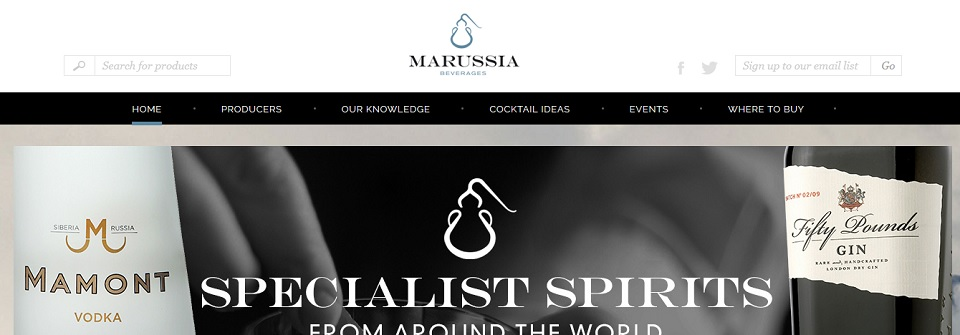

Marussia Beberages
The first proyect that I was involved in as a part of my internship in Basecreative (a Digital Web Agency located in Angel, London) was a responsive website about a drinks retailer called Marussia Beverages. They needed a website just to show what they do and how. However, the owner should be able to modify some parts of the content, like update the list of drinks, change the team members or add new retailers, and that's the part of the development I was in charge of.
I had to develop a new area on the admin side of the page (using the company WMS) in order to allow the admin to add new retailers using a spreadsheet. Then, all the retailers should be displayed in a map on the homepage. The retailer's data, like the name or the website, is displayed in a custom pop-add window on the map when the user clicks on the retailer's mark. Cluster markers were used for areas with too many markers.
So, in order to achieve this, first I developed an extensive admin area which allows not only to upload new retailers with a csv file but to delete them and edit them individually. PHP was the language supported by the WMS so I used it to make this job.
I decided to use the Google Maps API to display the homepage map. I had to customize it because some of the default options like the zoom or the colour of the water needed to be changed. A custom mark was also used to display all the retailers. With PHP and MySql, I got all the retailers data and I used JS to put that data into the google maps object , so I could display all the retailers on the map.
I also developed part of the producers section in this website. Working in this project allows me to learn a lot about how to work with a WMS and a content system management. Also I had the opportunity to work close with the Google Maps API, which was a really good experience in terms of programing because all the google APIs have a very extensive documentation to work with.